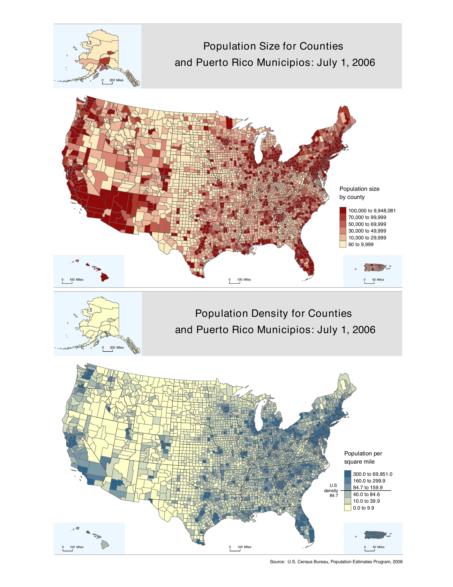
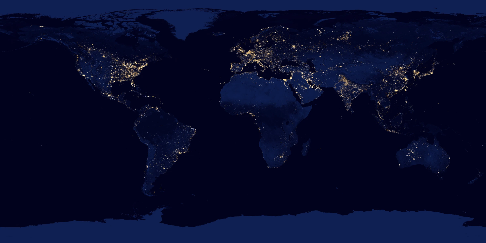

Peta umum
Menampilkan berbagai unsur geografis sebagai kerangka referensi. Jalan, sungai, relief, permukiman, batas, dan nama tempat dipilih secara seimbang sesuai skala.
Memahami bahwa satu peta dapat dikelompokkan dengan beberapa cara, serta mengenali ruang lingkup pekerjaan kartografi dari perencanaan hingga pembaruan peta.
Setelah pertemuan ini, mahasiswa diharapkan mampu mengelompokkan peta berdasarkan fungsi dan karakteristiknya serta menjelaskan lingkup pekerjaan kartografi.
Hal penting: satu peta dapat masuk lebih dari satu kelompok. Klasifikasi bergantung pada dasar pembagian yang digunakan.
Menampilkan berbagai unsur geografis.
Contoh: peta topografi atau RBIMenonjolkan satu tema atau kelompok informasi tertentu.
Contoh: kepadatan pendudukPeta umum memberikan gambaran berbagai unsur pada wilayah yang sama, seperti jalan, sungai, permukiman, relief, dan nama tempat.
Peta tematik dibuat untuk menonjolkan tema tertentu. Unsur dasar tetap dapat ditampilkan, tetapi fungsinya mendukung pembacaan tema utama.

Skala menunjukkan perbandingan jarak pada peta dengan jarak sebenarnya. Dalam istilah kartografi, skala besar menampilkan wilayah lebih kecil dengan detail lebih banyak, sedangkan skala kecil menampilkan wilayah lebih luas dengan detail lebih sedikit.
SKALA LEBIH BESAR 1 : 25.000 Cakupan lebih kecil; detail lebih banyak.
SKALA LEBIH KECIL 1 : 250.000 Cakupan lebih luas; detail lebih sedikit.
Informasi utama disajikan melalui simbol titik, garis, area, label, dan unsur kartografis lainnya.
Foto udara atau citra satelit menjadi tampilan utama atau dasar penyajian. Informasi tambahan dapat ditambahkan di atasnya.

Peta juga dapat dibedakan menurut tujuan penggunaannya, misalnya untuk navigasi, inventarisasi, perencanaan, pendidikan, analisis tematik, atau komunikasi hasil penelitian.
Contoh: peta jalan dan peta kepadatan penduduk sama-sama peta, tetapi pembaca, informasi utama, simbol, dan cara penggunaannya berbeda.
Dengan demikian, pekerjaan kartografi tidak berhenti pada menggambar. Kartografi juga mencakup perencanaan, pengolahan data, desain, evaluasi, dan pembaruan.
| Dasar pembagian | Kelompok utama | Contoh |
|---|---|---|
| Isi | Umum dan tematik | RBI; peta risiko bencana |
| Sifat data | Kualitatif dan kuantitatif | Jenis tanah; kepadatan penduduk |
| Skala | Besar, menengah, kecil secara relatif | 1:5.000; 1:50.000; 1:1.000.000 |
| Media | Cetak, digital statis, web interaktif | Atlas; PDF; peta web |
| Dimensi | 2D, 2,5D, dan 3D | Peta kontur; hillshade; model kota |
| Waktu | Statis dan dinamis | Peta sensus; animasi hujan |
| Fungsi | Referensi, navigasi, analisis, komunikasi | Peta jalan; peta kesesuaian lahan |
Satu peta dapat memiliki beberapa identitas. Peta risiko banjir dapat berupa peta tematik, kuantitatif, digital, interaktif, dan digunakan untuk perencanaan. Kelompok tersebut berasal dari dasar pembagian yang berbeda.
Menampilkan berbagai unsur geografis sebagai kerangka referensi. Jalan, sungai, relief, permukiman, batas, dan nama tempat dipilih secara seimbang sesuai skala.
Menempatkan satu tema sebagai informasi utama. Unsur peta dasar tetap digunakan, tetapi kontrasnya dikurangi agar tidak bersaing dengan tema.
| Pertanyaan | Peta umum | Peta tematik |
|---|---|---|
| Informasi utama | Kerangka geografis berbagai unsur | Satu fenomena atau kelompok tema |
| Simbol | Banyak jenis simbol referensi | Simbol mengikuti sifat data tema |
| Contoh | RBI, peta topografi, peta jalan | Curah hujan, geologi, penggunaan lahan, risiko |
Istilah besar dan kecil mengacu pada besar-kecilnya pecahan skala. Nilai 1/25.000 lebih besar daripada 1/250.000. Oleh karena itu, peta 1:25.000 disebut berskala lebih besar dan umumnya memuat detail lebih banyak.
1:25.000 → cakupan lebih sempit, objek lebih rinci.
1:250.000 → cakupan lebih luas, objek lebih banyak diseleksi dan disederhanakan.
Kategori skala besar, menengah, dan kecil bersifat relatif terhadap bidang serta standar yang digunakan. Penulisan angka skala selalu lebih jelas daripada hanya menyebut kategorinya.
| Dasar klasifikasi | Contoh kelompok |
|---|---|
| Isi | Peta umum, peta tematik |
| Skala | Skala lebih besar dan lebih kecil |
| Penyajian | Peta garis, peta berbasis foto/citra |
| Fungsi | Navigasi, perencanaan, analisis, pendidikan, dan lainnya |